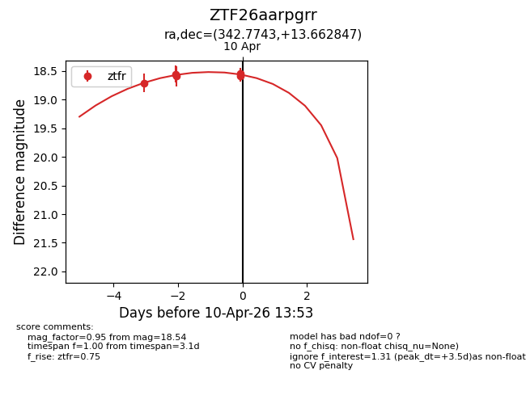
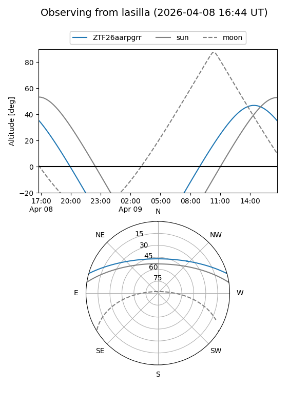
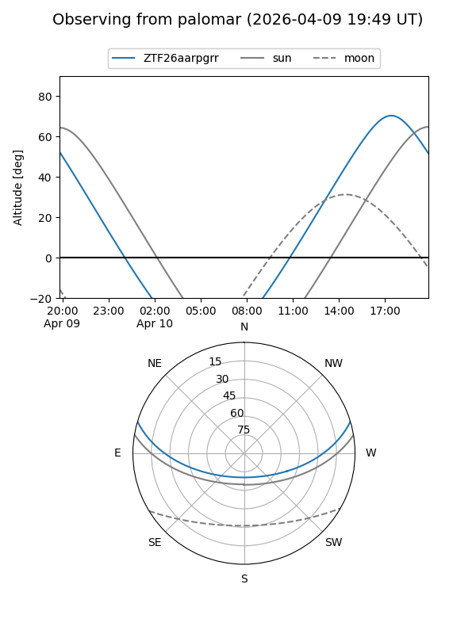
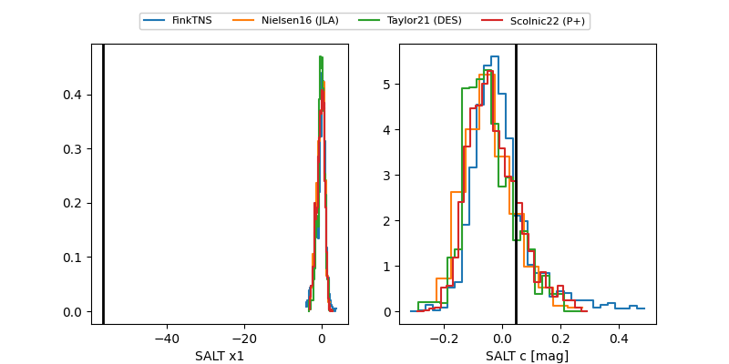

ZTF26aarpgrr
Target ZTF26aarpgrr at 2026-04-10 14:01
Aliases and brokers:
FINK: link
Lasair: link
ALeRCE: link
alt names
ZTF26aarpgrr (ztf,fink_ztf)
Coordinates:
equatorial (ra, dec) = 342.7743,+13.66285
equatorial (HMS+DMS) = 22:51:05.83,+13:39:46.25
galactic (l, b) = (83.5605,-39.83592)
Flags:
Photometry:
last ztfr=18.54
5 ztfr detections
Lightcurve

Visibility


Additional plots
